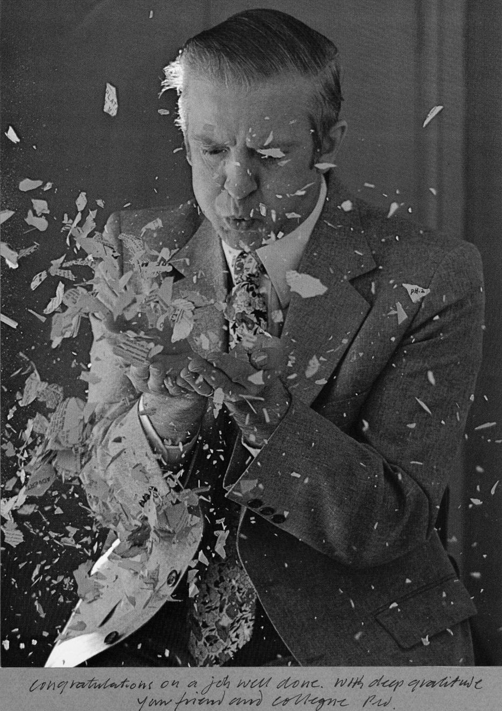
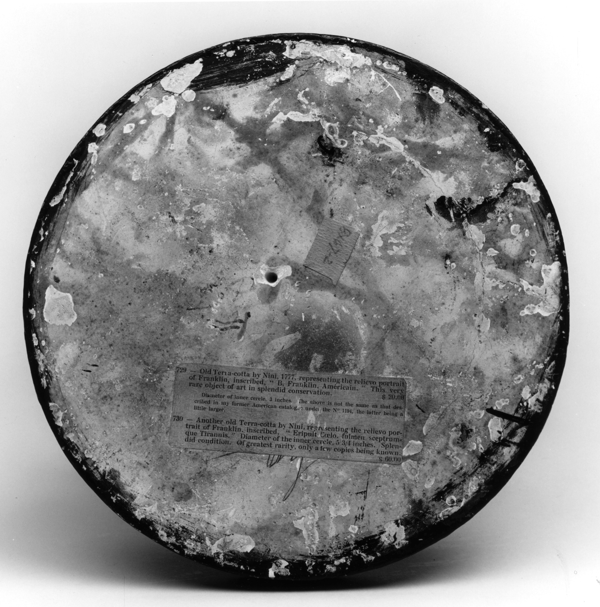
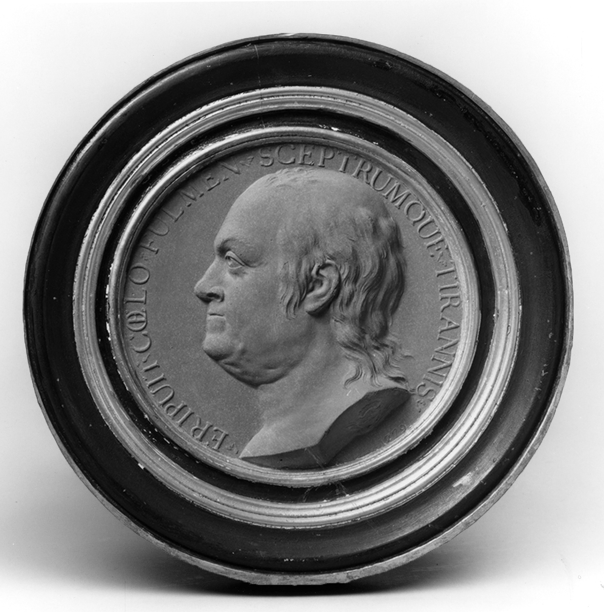
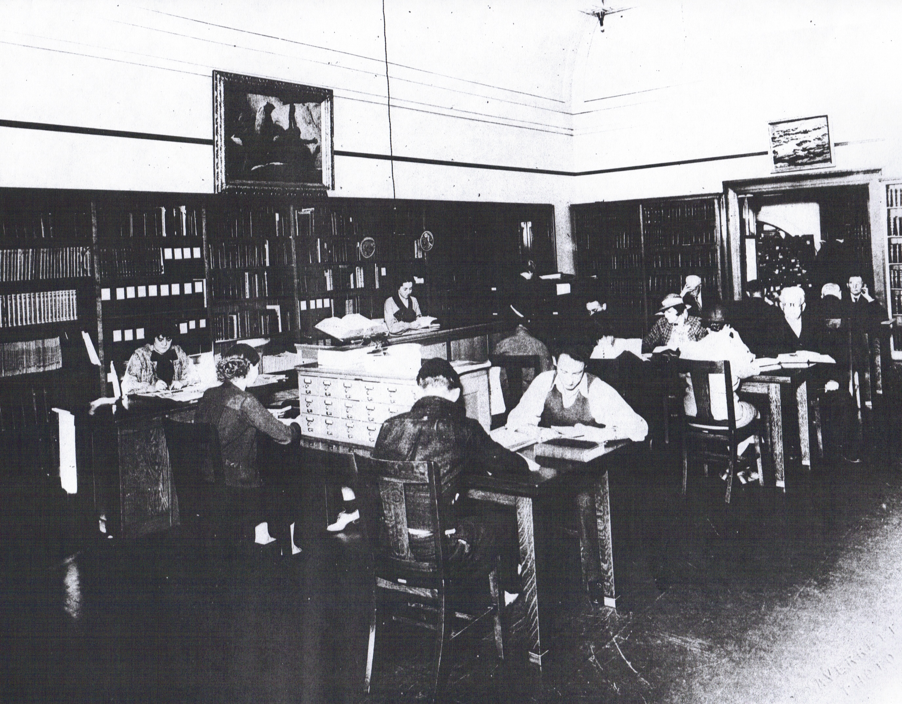
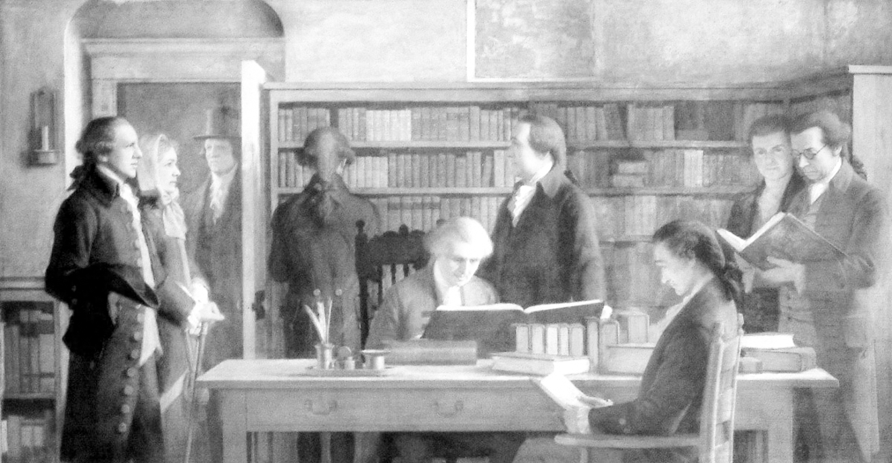
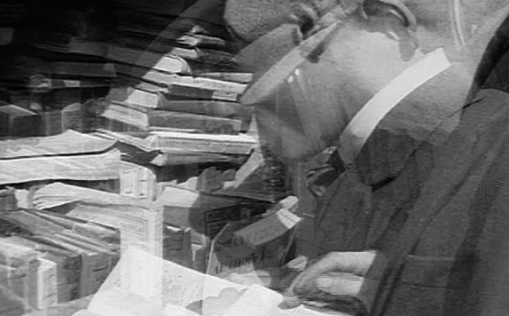
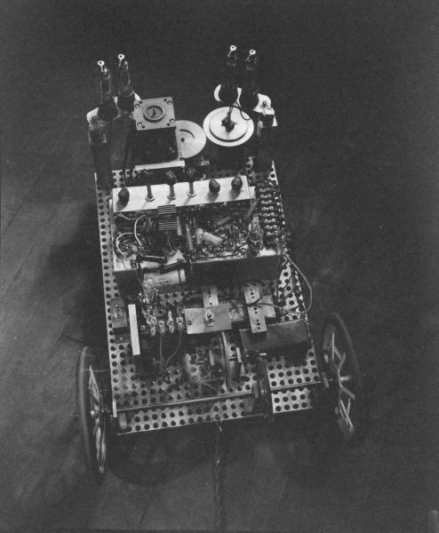
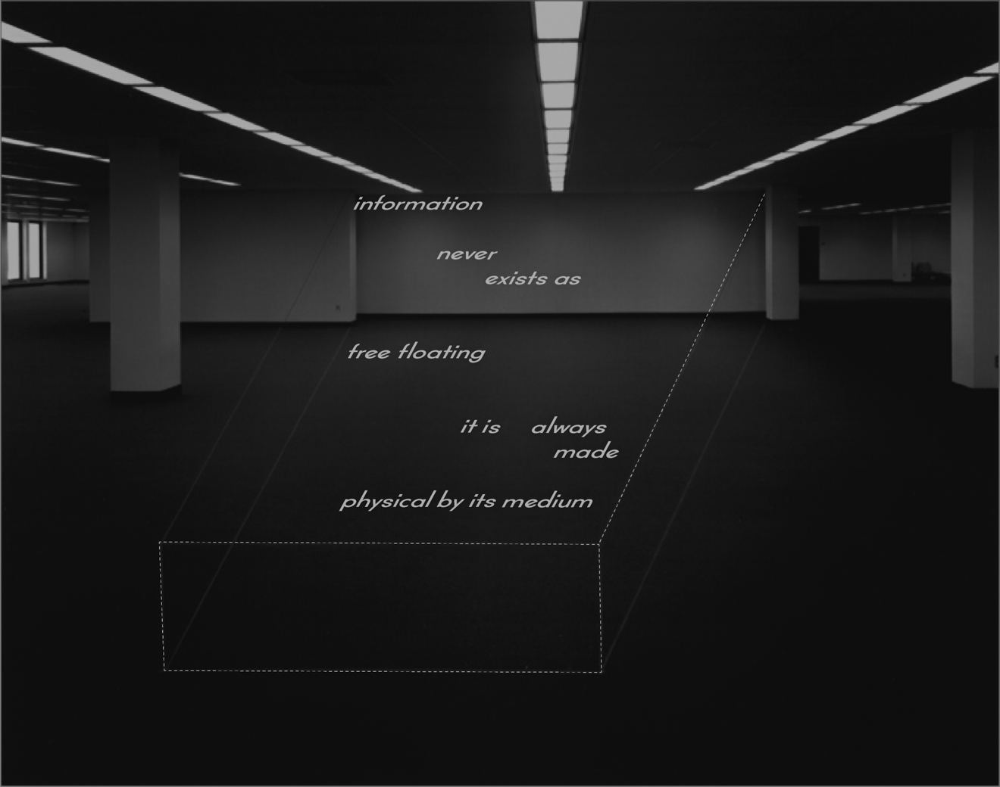
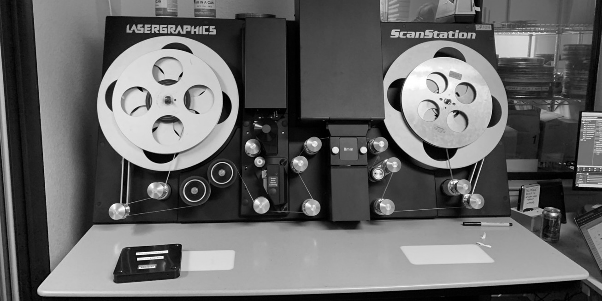

click anywhere to begin.
From Zero to One (with David Reinfurt)
Interview. Most Beautiful Swiss Books.2009
*

PHASE ONE CAMERA, 2024
ACCESSION NUMBER: 44.172
The first libraries were based on an Archive Model, a safe place for commercial transactions and inventories recorded on clay tablets. As the library developed, it retained this archival function— but on July 1, 1731, Benjamin Franklin and the Leather Apron Club established the first public Circulating Library. One was free to borrow any book, return it, and borrow another. This new library was built to evolve, a shifting arrangement of ideas and objects circulating in a community of readers.
In recent years, another model has materialized online, which might be called the Distributing Library. The Internet Archive or The Gutenberg Project are examples. Instead of 50,000 single copy books or 15,000 books with a few copies each, the Distributing Library offers unlimited copies, free to be downloaded, digested, dispersed. Now, if the Archive Model treats books as capital and the Circulating Library constitutes a gift economy by freely sharing books through a network of strangers, then what economic model corresponds to the Distributing Library?


PORTRAIT MEDALLION OF BENJAMIN FRANKLIN, 18TH CENTURY
ACCESSION NUMBER: 15.432

REFERENCE ROOM, 1953
ACCESSION NUMBER: 24.017

LIFE & IDEAS, 1965
ACCESSION NUMBER: 28.021
Libraries started as a single building owned by the state. Through Franklin's work, libraries evolved into branches whose assets were the property of a membership or community. The Archive is one place. The branch system is many. By examining this progression, the makeup of the Distributing Library becomes clear. It has a slippery relationship to place because its housed on an infinite number of servers and accessed through infinite browsers. The library’s assets aren't there to be stored or loaned, but rather to be copied.
In the days of The Archive, there were few copies and originals. It was controlled by the state and therefore its information was too. The structure was so centralized that it was a gift economy’s opposite. Writing in The Gift, Lewis Hyde gives the case of Errico Malatesta, who had realised that the state was relying on an outmoded library technology, The Archive, to exert control. Simultaneously, the increasing circulation of books created a more informed public. Information wanted to be free, open, and available to everyone.

CONVERSATIONAL SOCIETY, 1727
ACCESSION NUMBER: 14.022
The Leather Apron Club was also known as the "JUNTO", adapted from the Spanish verb— “to join”. It was first a social club before a library. With the advent of the Circulating Library, items existed to be discussed by a group— but now another change is taking place with the Distributing Library. Let’s tune back and listen to Lawrence Lessig speaking on nPR:
Well in the digital age every single thing we do with creative work on a digital network produces a copy, so that the act of reading in a digital network produces a copy. The act of sharing my book with my mother produces a copy. Any of these activities which in real space would not be producing a copy, necessarily, technically produce a copy in cyberspace or on the internet.

BOOK STALL, 1920
ACCESSION NUMBER: 16.320
NYC BURNED, 1994
ACCESSION NUMBER: 38.149
The Circulating Library was not a digital model, it was a real-world model. In the real world, information content is wedded to a physical form. In the digital world, information exists as one layer separable from digital form. While Franklin’s club shifted emphasis on how books were used, the Distributing Library deepens that idea of culture as conversation.
Even if you wanted to burn the library down, you couldn’t. Its users have made a thousand copies of it, taking place of the original. We are experiencing a massive shift from the Library of Alexandria to Google Books. They may be comparable— but they’re not the same. Does that answer your question?
I’m surprised at your distinction between the “real” and the “digital” worlds. Does the computer and its contents no longer belong to the same world that we live in? Digital information may appear disembodied, but it is always nothing more than a collection of simple electric charges,
on and off, 1 or 0.
Maybe the distinction isn’t between “real” or “virtual", but rather “analog” or “digital.” Circulating and Distributing libraries provide different platforms and possibilities, but when you’re trying to optimize how the information is used— it’s possible to be platform independent. Information wants to be free, accessible to whoever, wherever, however.
“Information wants to be free”?
Does it really?...The second half of Stewart Brand’s aphorism is often conveniently omitted, so i’ll include it here:
Information Wants To Be Free. Information also wants to be expensive. Information wants to be free because it has become so cheap to distribute, copy, and recombine, too cheap to meter. It wants to be expensive because it can be immeasurably valuable to the recipient. That tension will not go away. It leads to an endless wrenching debate about price, copyright, “intellectual property,” the moral rightness of casual distribution, because each round of new devices makes the tension worse, not better.
TIME/LIFE, 1965
ACCESSION NUMBER: 28.175
Brand’s aphorism makes a cost distinction. I’m making a use distinction. They’re quite different. Maybe we should rewrite him:
“Information wants to be freed.”
But still, that rhetoric of “free information” has its roots in the mid-twentieth century discourse in Cybernetics and Information Theory, which model a communications system that isolates information from its carrier. Technically, this may be correct– and yet, I challenge you to find information that arrives without a vehicle.
Perhaps this is why our conversation makes sense in a bulletin about books. Books are a vehicle for delivering information, and I think you’ll agree that the form of the book is as important as the information it carries for the message delivered.

PALOMILA CART, 1949
ACCESSION NUMBER: 19.428
I’m not for the idea that information wants to be free. It wants a house, a body, a vehicle. It wants that carrier to be as considered as what its carrying. I agree that information can be separated from its carrier and recombined in new objects for circulation. But, I think information never exists as free-floating, it is always made physical by its medium.
There's no such thing as pure information.

LIBRARY PROJECTION, 1977
ACCESSION NUMBER: 32.174
Maybe here’s where we see a boundary between *what libraries want* and *what books want*. Libraries want the information first and foremost. They spread “Lux et Veritas” (light and truth). That is their public trust. Franklin’s library grew out of his enlightenment ideals, and the idea of enlightenment itself is embedded with this idea that “knowledge” is analogous to “light.” It is disembodied, diffuse, and not naturally controlled.
SERVERS, 2018
ACCESSION NUMBER: 41.357

I think you’re saying is that books want to remain book-like, while other information carriers, webpages for example, try to take their place. We dislike calling Amazon’s Kindle a “book.” It’s something emulative of a book. You “turn” a digital “page”, wiping the screen of pixels and replacing those pixels with new ones. Design is the set of decisions that add one metaphor on top of another to make the Kindle feel book-like. It’s an exercise in analogy. But books don’t want the Kindle. Books as a medium want more books. Information, however, just wants to be transmitted
—through whatever host allows it to spread as widely as possible.